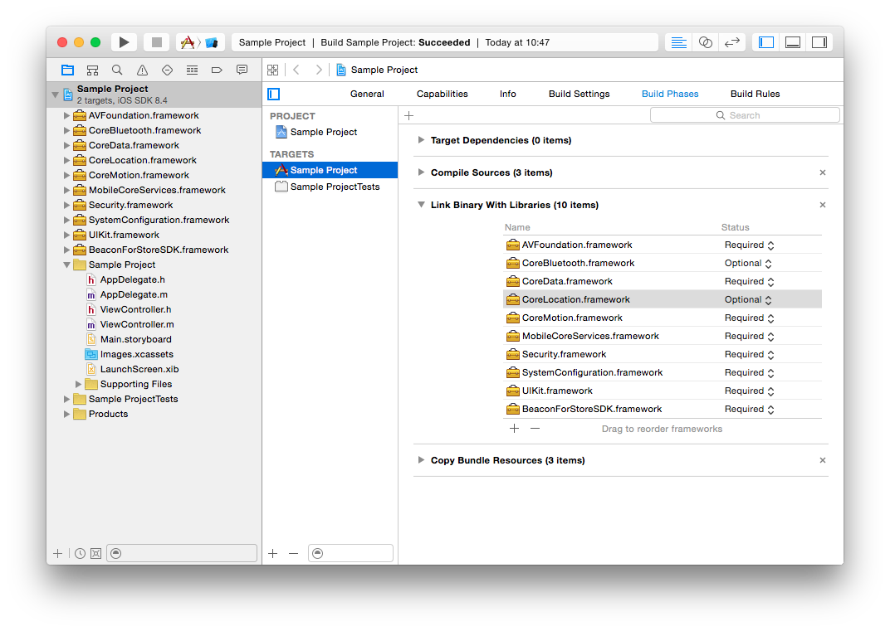
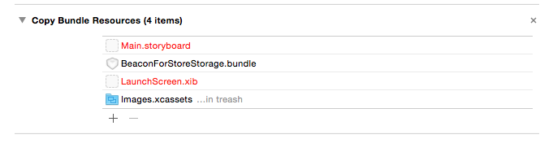

Integrating the SDK with your Xcode project Document
Hardware & software requirements
The B4S SDK uses Bluetooth 4.0 BLE (Bluetooth Low Energy) and thus is only available on the following devices:
- iPhone 4S and up
- iPod Touch 5th generation and up
- iPad 3rd generation and up
- iPad mini (all versions)
Minimum iOS target : iOS 7
Xcode 6 is required for development
Installation
You must perform the following tasks to integrate the BeaconForStore SDK with your application:
- Get your application ID
- Import required frameworks
- Import BeaconForStoreStorage.bundle
- Configure application modes
- Allow location usage
- Code-level integration
Get your application ID
In order to use the SDK you must know the application ID that is tied to your BeaconForStore account. To get this App ID:
- Install the B4SManager app from the App Store
- Log-in with your B4S account
- Go to the “Applications” section
- Tap on your application
- Use the “Share” button on the “Application ID” section to send the application ID to yourself as an email.
Import frameworks
- Open your Xcode project
- Select your project in the Project navigator
- Select your application target
- Select the “Build phase” tab
- Open Project Settings -> Build Phases
- Unfold the “Link Binary With Libraries” phase
- Click ‘+’
- Click “Add Other…”
- Select the BeaconForStoreSDK.framework on your drive
- Click “+” again
- Select the following frameworks:
- AVFoundation.framework
- CoreBluetooth.framework
- CoreData.framework
- CoreLocation.framework
- CoreMotion.framework
- MobileCoreServices.framework
- Security.framework
- SystemConfiguration.framework
- UIKit.framework
- Set the framework status to “Optional” for the following frameworks:
- CoreBluetooth.framework
- CoreLocation.framework

Import BeaconForStoreStorage.bundle
- Drag & drop the BeaconForStoreStorage.bundle onto your project
- Check the “Copy items if needed” box
- Add the bundle to your application target
- Check if the bundle appears in the “Copy File” step of your application target

Configure application modes
To be able to track the beacons even when in background mode, you must enable background modes in your application.
- Select your project in the Project navigator
- Select your application target
- Select the “Capabilities” tab
- Turn on “Background Modes”
- Check the “Background fetch mode”

The application will be started by iOS when entering a geofence region or detecting an iBeacon, thus the didFinishLaunchingWithOptions: method from your app delegate will be called.
So if your app calls a tagging / analytics tool (Flurry, Google Analytics…) from this method, your metrics will be eroneous. You should use the ‘applicationWillEnterForeground’ delegate method to track application launches instead.
Allow location usage
Starting with iOS8, you must add a key to your Info.plist to be able to get the user location.
- Open your Info.plist file
- Add a NSLocationAlwaysUsageDescription key
- Set its value to a string describing the reason for accessing the user’s location information
Please see this document for more information
Code-level integration
Refer to this document